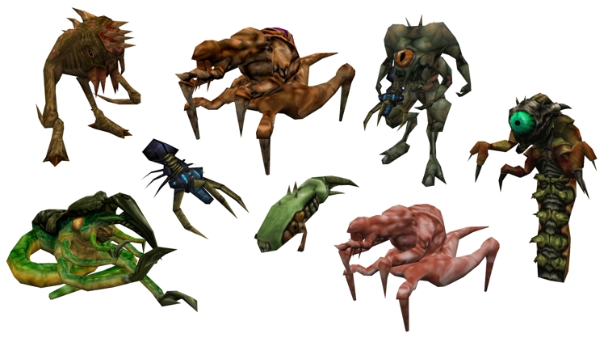

ENEMIGOS DE LA SAGA
HALF LIFE:
Headcrab:
Los Headcrab son criaturas pequeñas, alrededor de medio metro de largo de la pierna de adelante hacia atrás y de un pie de ancho. Tienen cuerpos redondos lisos y de color tostado y cuatro piernas, dos grandes garras en la parte delantera y dos más gruesas y cortas en la parte posterior. A pesar de su pequeño tamaño, las patas traseras del Headcrab puede soportar su cuerpo, lo que le permite andar de "puntillas" por el suelo y saltar varios metros en el aire hacia su presa. Cuatro piezas bucales se pueden ver en su frente que terminan en afilados colmillos, posiblemente utilizados para colgar ya sea en un huésped o inyectarlo con un sedante o algún otro producto químico utilizado en el proceso de zombificación. Bajo el cuerpo tiene una boca redonda, sin labios que contiene un fuerte "pico" que se utiliza para excavar a través del cráneo del huésped. El Headcrab puede pesar hasta ocho kilos y medio, aunque este es el peso de Lamarr, un bien alimentado Headcrab. Los Headcrab pueden producir una variedad de sonidos. Cuando no están cazando, Los Headcrab suelen emitir chirridos y bastante tranquilas, llamadas repetitivas mientras balancean su cuerpo hacia atrás y adelante. Cuando atacan, Los Headcrab emiten un chillido agudo y estridente cuando saltan hacia sus víctimas.
En Half-Life, los Headcrab se originan de una criatura gigante conocido como Gonarch que comparte las mismas cualidades físicas con los Headcrab. Subdesarrollados bebés Headcrab salen a un ritmo rápido de un saco que cuelga debajo de la criatura. Los Headcrab bebés son criaturas muy pequeñas con cuerpos blandos, de color blanco translúcido.
El Headcrab trae dos variaciones: el Headcrab Rápido y el Headcrab Venenoso.
Bullsquid:
Bullsquid (designados taxonómicamente "Gastropolypus toxophlegmata") son unas muy agresivas, criaturas bípedas que aparecen en el Centro de Investigación Black Mesa debido a la Falla dimensional causada por la cascada de resonancia. Los Bullsquids son capaces de sobrevivir y prosperar en ambientes que son hostiles o incluso tóxicos para los seres humanos, incluyendo alcantarillas, piscinas de materiales radiactivos, sustancias químicas o desechos biológicos. En Xen, los Bullsquids se encuentran bebiendo de piscinas curativas.
El cuerpo de un Bullsquid es vagamente similar en apariencia a la de un terópodo pequeño, con dos patas cortas, musculares y una cola de espesor que se estrecha a un punto. El tórax se une abruptamente a la cabeza de la criatura con el cuello sin separación visible. Una muestra típica representa aproximadamente un metro de altura y unos dos metros de longitud. Dos ojos de pupilas de hendidura, negros y brillantes y están montados en cada lado de su cabeza. La cola tiene una garra de gancho en su punta, lo que explica la gran cantidad de daño causado por el ataque del Bullsquid.
El Bullsquid tiene una serie de capacidades ofensivas. Son muy territoriales, ya que a menudo se han visto atacando a otras criaturas e incluso miembros de su propia especie. Ellos atacan a los Headcrabs, sin detenerse hasta que todos los Headcrabs en su vista son eliminados, mientras que no atacan a los Houndeyes. Cuando se detectan durante la cascada de resonancia en Half-Life y en el mismo mapa en Opposing Force están bebiendo de una piscina de Sanación en ambas ocasiones, por lo que se ve probablemente simplemente no son agresivos, mientras que comen o beben o simplemente no pueden ver al jugador de alguna manera.
Barnacle:
El Barnacle (denominado taxonómicamente "Cirripedia donaldsonia", o "Barnacle Donaldson"), también llamado Lapa, es un Alien de Xen que se fija en los techos, que destaca por su método único de captura de presas utilizando su pegajosa "lengua".
El Barnacle es poco más que una gran boca con dos hileras de dientes afilados, con una larga lengua-como cuerda colgando de sus mandíbulas unida a su apéndice. Esta cuerda secretamente tiene un adhesivo natural muy fuerte que puede unirse a cualquiera que entra en contacto con ella. El Barnacle utiliza su "lengua" para atrapar y levantar las presas, el apéndice es lo suficientemente fuerte para soportar el peso de un humano adulto.
Los barnacles no pueden diferenciar entre los elementos vivos e inorgánicos que se pegan a su lengua, y pueden ser engañados para transportar barriles, paletas y otros restos que se encuentran comúnmente en las proximidades. Al tratar de consumir estos elementos, el Barnacle los encontrará desagradables y los liberara, demostrando que pueden disolver sus propios adhesivos si es necesario.
Vortiguant:
Los Vortigaunt (denominación taxonómica: Xenotherium subservilia), anteriormente conocidos como Esclavos Alienígenas y conocidos cariñosamente como "Vorts" por sus aliados, son especies exóticas sapientes encontradas en la Saga Half-Life.
Mucho antes del Incidente de Black Mesa, el mundo natal de los Vortigaunts fue invadido por los Combine, obligando a los sobrevivientes de la invasión a huir a Xen. Cuando ocurrió el Incidente de Black Mesa, su maestro, un ser conocido como el Nihilanth, vio la grieta que se abría como una oportunidad para escapar, y dirigió a los Vortigaunts para que invadieran la Tierra.
Tras la muerte de Nihilanth, los Vortigaunts optaron por aliarse con la Resistencia humana en su intento de derrocar al Imperio Combine en la Tierra.
Houndeye:
El Houndeye es una criatura de tres patas que se teletransporta desde Xen a los Laboratorios de Investigación Black Mesa después de la Cascada de Resonancia.
Poseyendo sólo tres patas y un tórax, el Houndeye es de un tenue color amarillo-verdoso, con rayas azul eléctrico como las rayas de un tigre que adornan su columna vertebral. En lugar de una cabeza, tiene un grande y negro ojo compuesto protegido por los párpados. Los Houndeyes aparentemente se comunican a través de una serie de sonidos agudos o mas o menos similares a los ladridos de los perros, en la que su comportamiento y movimiento también se basa parcialmente, de ahí su nombre. Como la mayoría de las criaturas que se encuentran en Xen, Los Houndeyes se estudian en el Sector E de Black Mesa.
El Houndeye es un excelente ejemplo de un animal social en términos de caza. Mientras que una criatura tímida por sí mismo, grupos de tres o más en presencia de alguien, emiten destructivos ataques sonoros y armónicos en ondas de choque, que puedan herir a los que atacan o destruir objetos cercanos, como cajas de madera o ventanas. Las ondas de choque son siempre visibles, aparecen como círculos violeta o blancos alrededor de la criatura. Los párpados son vistos moviéndose sólo cuando están excitados por el efecto.
Ictiosaurio:
El Ictiosaurio (denominación taxonómica: "Xenotherus icthycanthus") es una especie Alienígena transportada a la Tierra desde el mundo fronterizo de Xen. Destacado en Half-Life y sus expansiones, tiene un pequeño cameo en el inicio de Half-Life 2.
A pesar de que lleva el nombre del extinto grupo de reptiles marinos, los Ictiosaurios, se les parece sólo en su ecología carnívora y su tamaño. Cuando el Ictiosaurio se encontró por primera vez en el capítulo Captura de Half-Life, un científico le dice a Gordon que los científicos dicen que fue transportado desde el Abismo Challenger en el Océano Pacífico, pero este dio la opinión de que la criatura nunca nadó en aguas terrestres hasta hace unas semanas, posiblemente es el momento de su llegada al Centro de Investigación de Black Mesa, la criatura es probablemente de Xen.
En Half-Life, el Ictiosaurio se encuentra en varias zonas de agua, incluyendo un laboratorio inundado, el embalse detrás de la represa hidroeléctrica, en las áreas de aguas residuales y en una de las cámaras de Nihilanth. A menudo son plácidos al principio, pero rápidamente se vuelven hostiles, especialmente si el jugador es violento con ellos. La velocidad y la ferocidad del Ictiosaurio combinado con la mala visibilidad bajo el agua hace que algunas de las áreas submarinas de Half-Life sean las partes más aterradoras del juego.
El Ictiosaurio también hace una aparición única en Half-Life 2. Durante una falla de teletransporte, Gordon Freeman está momentáneamente transportado fuera de Ciudad 17, en el aire. Mira hacia abajo, y cae en el océano. Bajo el agua, es casi tragado por completo por un Ictiosaurio, antes de ser transportada a otro lugar. A pesar de este encuentro, se genera mediante los comandos de la consola o de un mod como el Garry's Mod. También ataca al jugador de la misma manera, lo que sugiere que los desarrolladores planearon que Gordon Freeman se encontrara con ellos en el juego propiamente dicho.
ZOMBI:
El Zombi es un enemigo que aparece recurrentemente en la saga de Half-Life. Es creado cuando un Headcrab se adjunta a la cabeza de un huésped y toma el control de su sistema nervioso.
Una vez que un Headcrab con éxito se adhiere a un huésped, el Headcrab asume el control de todas sus funciones motoras, siendo capaz de caminar y atacar con las extremidades del huésped. A través de algún proceso biológico desconocido, las manos del huésped se convierten en garras largas y esqueléticas y un enorme agujero aparece en su pecho forrado con costillas del huésped, convirtiéndose en una improvisada "boca", de costillas que sirven como dientes. Eliminando el Headcrab se revela que la cabeza del huésped está doblada anormalmente hacia arriba, su pelo esta manchado de sangre, y su rostro esta pálido, con sus ojos cerrados y la boca abierta en un grito congelado. En Half-Life 2, los ruegos y gritos ahogados procedentes de los zombis indican que la víctima puede ser un poco consciente de su estado zombi y, obviamente sufre de una cantidad inimaginable de dolor todo el tiempo.
En ocasiones, los Headcrab del zombi pueden sobrevivir perdiendo las dos piernas y su torso inferior y sigue gateando usando sus brazos. En la mayoría de los casos, un Headcrab permanece unido a su huésped hasta que el zombi es destruido, aunque en Half-Life 2, en ocasiones se separará del huésped si este se vuelve inmóvil por sus lesiones.
Hay 4 variantes de Zombis:
Zombi Rápido, Zombi Venenoso, Gonome y el Zombine que es un Combine controlado por un Headcrab.
Gonome:
El Gonome es el siguiente estado de mutación de un Zombi. Solo aparece en Half-Life: Opposing Force.
Si bien los motivos exactos de la transformación son desconocidos, parece que si un Headcrab y su huésped sobreviven por un período indeterminado de tiempo o están sometidos a ciertas condiciones, el zombi se convertirá en un Gonome. El anfitrión experimenta un aumento de la masa total del cuerpo, y la herida en la cavidad torácica se desarrolla en unas grandes fauces funcionales. El Gonome también adquiere la capacidad de arrojar proyectiles orgánicos de estas.
Mientras que el cuerpo del anfitrión parece crecer de manera exagerada, el headcrab que controla al huésped parece marchitar o desinflarse; los contornos de las cuencas de los ojos y la nariz del cráneo son visibles a través de la piel del Headcrab.
Esta mutación es una demostración de la brutalidad de un headcrab; puede cambiar drásticamente el aspecto y biología del huésped
Alien Grunt:
Alien Grunt (denominado taxonómica "Xenotherium Myrmex") son una raza de alienígenas que forman el grueso del ejército de Nihilanth.
Los Alien Grunts miden unos siete pies de altura (2,10 metros apróx.) y están armados con un arma biológica llamada Lanzador de Avispones, que dispara proyectiles biológicos conocidos como Avispones, los cuales rastrean a sus objetivos y pueden variar su trayectoria. En combate cuerpo a cuerpo, también va a pelear cuerpo a cuerpo sin armas con el enemigo.
Los Alien Grunts comparten varias características con sus contrapartes Vortigaunt, tales como múltiples ojos rojos, piernas articuladas inversas, pies ungulados, y un brazo corto que se extiende desde mediados de su torso, que se utiliza para alimentarse. Son clasificados por científicos de la Tierra en el mismo género que los Vortigaunts, Xenotherium,Los Alien Grunts también están equipados con una armadura metálica alrededor de la ingle y los hombros, así como cascos de metal y zapatos, aunque se ha especulado que esto es realmente un caparazón natural se formó como resultado de una dieta rica en calcio. Curiosamente , esta armadura protege completamente la parte posterior del Alien Grunt, pero está abierto en la parte delantera dejando el torso inferior expuesto. Esto puede ser para permitir moverse a el tercer brazo, o indicar que los órganos vitales son más vulnerables desde atrás.
Gargantua:
El Gargantua es de aproximadamente seis metros (20 pies) de altura, en su mayoría es de color azul, y tiene un ojo de color amarillo que se ilumina en rojo cuando percibe una unidad enemiga. En lugar de las manos, lleva dos pinzas gigantes que se pueden abrir para emitir chorros de calor intenso, así como un par de patas vestigiales debajo del tronco, un rasgo común en la mayoría de las criaturas de Xen.
La criatura tiene una cáscara gruesa o caparazón que lo hace completamente a prueba de balas y las balas normales hacen un daño mínimo. Se requiere una gran cantidad de daño explosivo, eléctrico o energía antes de ser destruido y rara vez puede ser derrotado con métodos convencionales. No se sabe si el Gargantua es una especie natural o si se fabrica como el Alien Grunt. Su armamento integrado y el aspecto bio-mecánico sugiere que es una criatura creada artificialmente o procesada, Se introdujo por primera vez en el Sector E Control de Rieles durante el capítulo Power Up de Half-Life. Ahí está luchando contra dos soldados HECU mientras que el G-Man está mirando desde la sala de control y pronto se vuelve contra Gordon Freeman al darse cuenta de su presencia. Para derrotarlo, Freeman reactiva la energía a las pistas que conducen a la red de Transporte de Materiales y guía a la criatura a la pequeña central eléctrica en las cercanías, donde la criatura es destruida por las descargas eléctricas.
Se ve de nuevo al Gargantua en el capítulo Tensión en la Superficie, donde lanza un SUV a los soldados HECU en un estacionamiento subterráneo, que lleva a la Zona de Procesamiento de Residuos 3. Al percatarse de Freeman, le persigue en un túnel que conduce al Área de Procesamiento de Residuos 3, donde Freeman tiene que usar un mapa táctico de HECU para llamar un ataque aéreo sobre la criatura.
El siguiente Gargantua se ve en Xen (en lo que puede ser su hábitat natural) durante el capítulo "Interloper", donde simplemente se puede esquivar, La última vez que el Gargantua aparece en Half-Life es en el capítulo Nihilanth al ser Gordon transportado por el Nihilanth a la tercera cámara, por cuarta vez, un Gargantua aparece en lugar de los Controladores Alien, En Opposing Force, un Gargantua puede verse atado en la parte superior de la presa hidroeléctrica, en el capítulo "Foxtrot Uniform", mientras que los soldados HECU y las tropas de choque de alrededor luchan contra el y el G-Man usa un teléfono celular en la torre de toma de la presa. Dinamita se ha instalado alrededor de el Gargantua, y Adrian Shephard rápidamente la detona, matando a la criatura y destruyendo parcialmente la presa. Sin embargo, si el jugador permite a los 2 Shock Troopers atacar el Gargantua durante el tiempo suficiente, pueden acabar con él.
Alien Controller:
Alien Controller (Controladores Alien) son criaturas levitantes de Xen. Parecen inteligentes, y se parecen mucho a Nihilanth, lo que, junto con su nombre, sugiere que son parte de la casta de mando de Xen. Los controladores no se ven en el Laboratorio de investigación Black Mesa hasta que Gordon Freeman está a punto de teletransportarse a Xen, donde se encuentran en alta cantidad. Gina Cross y Colette Green suelen verlos con más frecuencia en las instalaciones, en los momentos de mayor actividad de desplazamiento de resonancia.
Los Controladores Alien comparten muchas características con Nihilanth, lo que sugiere que puede ser de la misma especie o al menos estrechamente relacionado. Al igual que los demás seres vivos en Xen, los controladores alienígenas tienen un tercer brazo vestigial creciente desde el centro de su tórax. Además de esto, los controladores alienígenas tienen cabezas desproporcionadamente grandes, que pueden abrir para revelar una punta o cono, asemejándose el interior del cráneo de Nihilanth. A diferencia de Nihilanth, los controladores tienen patas más largas y son capaces de levitar sin la ayuda de un asiento mecánico. Se desconoce si esta capacidad se deriva de sus facultades psico extrañas, o de sus partes aparentemente mecánicas. Los controladores alienígenas pueden simplemente haber desaparecido después de la muerte de Nihilanth.
Raza x:

Raza X es la designación dada a una misteriosa raza alienígena (o unión de diferentes razas) que apareció en el Laboratorio de Investigación Black Mesa durante el Incidente de Black Mesa. Aparecen únicamente en Half-Life: Opposing Force.
La Raza X se compone de varias especies, que varían mucho en tamaño y forma. Su tecnología parece ser casi exclusivamente de naturaleza biológica, en particular, utilizan armas vivas como el insectoide y utilizan una enorme criatura conocida como un gusano llamado Gene Worm para terraformar mundos. Los alienígenas también tienen una variedad de defensas naturales, como garras, espinas y saliva tóxica.
La Raza X parece haber dominado la tecnología de teletransportación, ya que pueden teletransportarse alrededor de Black Mesa e han instalado por lo menos con un cristal de Xen un dispositivo de teletransporte en Xen. Sus portales son de color púrpura en color, a diferencia de los portales - verde brillante visto utilizados por los Xen. Utilizaron el teletransportador de Xen durante etapas posteriores al Incidente de Black Mesa para traer Sprites de su planeta natal a la Tierra, lo que sugiere que ya tenían algún conocimiento de Xen antes de la invasión . Sin embargo, no fueron particularmente bien adaptados al mundo fronterizo y como resultado, nunca tuvieron una notable presencia allí, Algunas de las criaturas eran estudiadas en el Sector E de Black Mesa. Un portal enorme de Sprite utilizado por el gusano Gene también está presente en Black Mesa. No todos los científicos de Black Mesa están conscientes de la existencia de la Raza X, como se sugiere cuando un científico atacado por un Shock Trooper dice en voz alta que él "nunca los había visto antes".
Nihilanth:
Nihilanth fue el líder de las fuerzas de Xen que invadieron la Tierra durante el Incidente de Black Mesa, quien también actúa como el principal antagonista y jefe final de Half-Life.
Nihilanth provendría de 'nihil' ("nada" en latín) que es lo que siente de los intrusos, y 'giant' (en inglés, gigante) o una corrupción de 'Synthetic', que era lo que los Combine querían que fuera. Casi lo consiguen: este ser debía usar una silla mecánica para levitar ya que perdió la capacidad de levitar y con otros seres inteligentes provenientes de Xen, como los Vortigaunts, y lleva grilletes similares usados por estos.
Gordon Freeman tuvo la tarea de matar a Nihilanth, ya que es la única fuerza que sostiene la grieta dimensional abierta después de que el cohete satelital lanzado por los Laboratorios de Investigación de Black Mesa fallara en revertir la Cascada de Resonancia. Después de que Gordon entrara en Xen, Nihilanth regularmente contactó a Gordon telepáticamente y en ocasiones se burlo de él. Estos mensajes fueron recibidos inmediatamente después de su teletransportación a Xen. Al entrar en su guarida, Nihilanth atacó a Gordon lanzando dos tipos diferentes de esferas de energía: varios globos de color azul eléctrico que causan un daño inmenso y uno de movimiento lento, de color verde que transportaba a otras secciones de la guarida del Nihilanth poblado por otros Alienígenas de Xen. Además, estas esferas verdes también teletransportan criaturas a la cámara principal del Nihilanth al impactar con las paredes de la cueva para ayudarlo a defenderse de los intrusos.
Tentaculo:
El Tentáculo (denominación taxonómica: "Hypersuctor sensitiva") es una gran criatura alienígena que responde violentamente al sonido y las vibraciones. Se vio por primera vez en una cámara de prueba de propulsión de cohetes en el sector D de Black Mesa , pero también se ve a través de la serie sobre Xen y en otras áreas del Centro de Investigación Black Mesa.
Un gran, cuello verde, segmentado que se una con una "cabeza", que termina en una punta afilada, y la característica algo que se parece a un ojo. Este "ojo" parece ser un órgano sensorial, aunque la criatura sólo reacciona a las vibraciones del sonido y de la superficie. Tentáculo típicamente utiliza el mismo pozo para tres cuellos, lo que sugiere que pueden ser de un organismo más grande y estar juntos. De hecho, en Half-Life, después del primer encuentro con Tentáculo, el jugador viaja a través del abismo que la criatura había ocupado. El cuerpo del tentáculo se encuentra en la parte inferior de la grieta es algo con forma de calamar, con tres cepas que parecen haber sido cortadas. Algunos artes conceptuales del tentáculo, muestran que es un grupo de tres tentáculos unidos a una base bulbosa, que coincide con la que se encuentra en el juego. Aunque el Tentáculo por lo general viene en grupos o racimos de tres, el Tentáculo se encuentra solo también, y el número de tentáculos actual puede reflejar el tamaño o nivel de desarrollo del cuerpo, o bien una más dispersa, con tentáculos en varios lugares. Las razones que podrían apoyar esta hipótesis son el científico retirado de la sala de control, cuando se encontró por primera vez en el silo, lo baja en el pozo y posiblemente es comido por la base. Otra característica podría ser la forma en que se apoya sobre la audición, ya que la base podría ser demasiado grande para pasar a través, y se basa en la audición dispuesta a tirar de una presa.
Unidad de Combate en Entornos Peligrosos:
La Unidad de Combate en Entornos Peligrosos, a menudo abreviado HECU (Hazardous Environment Combat Unit), es una unidad del Mando de Operaciones Especiales del Cuerpo de Marines de los Estados Unidos que ocupó un lugar importante en los hechos de Half-Life y sus expansiones.
Los soldados de la HECU están especialmente capacitados para hacer frente a una gran variedad de situaciones de combate en interiores, con especial participación de un entorno peligroso y enemigos no convencionales. Los miembros de la HECU son entrenados por los instructores experimentados Dwight T. Barnes y Sharpe, en bases custodiadas y atendidos por miembros de la Policía Militar. Los soldados son referidos a menudo como "grunts" por los fans del juego, y también por los miembros de Black Ops en el juego. Junto con los Black Ops, formaron parte del "peligroso y muy eficiente equipo de limpieza" enviado a Black Mesa en caso de alguna emergencia, y se supone que debían trabajar en conjunto con las Fuerza de Seguridad de Black Mesa en estos casos.
En los archivos de audio de Half-Life, los soldados de la HECU son descritos de la siguiente manera: unidades humanas militares enviadas para "limpiar" la base después del desastre. Es su trabajo ejecutar a cualquier persona con conocimiento del proyecto de investigación que salió mal. Cuanto más sepan sobre el proyecto, más requieren ser eliminados. Sobre todo odian a Gordon Freeman, en lo personal, porque a eliminado a muchos de sus amigos.
Ellos aparecen en Half-Life y sus expansiones, Opposing Force, Blue Shift y Decay.
Comandos Negros:

Los Comandos Negros, conocidos también como los Black Ops son un grupo comando de asesinos entrenados del gobierno vistos brevemente en Half-Life y posteriormente en Opposing Force. Poco después que la HECU, los Comandos Negros invaden el Centro de Investigación Black Mesa para ocultar cualquier evidencia de la Cascada de Resonancia, Si bien se afirma oficialmente que la HECU y los Black Ops entran en la instalación, en caso de una emergencia y trabajan con las Fuerzas de Seguridad de Black Mesa como "un equipo de limpieza peligroso y muy eficiente", se ha comprobado que funcionan de forma independiente, matando a todos los seres vivos dentro de la base, ya sean empleados de Black Mesa, soldados HECU, o formas de vida Xen, y, finalmente, destruyen por sí mismos Black Mesa por completo a través del uso de un arma nuclear.
Los Black Ops aparecen por primera vez en el Sector E en el capítulo de Half-Life, Captura, y luego vuelven a aparecer en mayor número en el Sector F, durante el capítulo Núcleo Lambda. Sólo Mujeres Asesinas Comandos Negros son vistas por Gordon Freeman en el juego, La Mujeres Comandos Negro son sorprendentemente ágiles y capaces de correr más rápido que cualquier otro enemigo y pueden saltar a alturas extremas. Llevan un traje de salto negro y usan gafas de visión nocturna, que incluyen un auricular con un micrófono, aunque a ninguna se le ha oído hablar. Están armados con una Glock 17 con silenciador y granadas. A corta distancia, utilizan una serie de patadas para luchar contra el jugador.
Gonarch
El Gonarch es la fase final del ciclo de vida de un Headcrab. Se encuentra en una prolongada batalla que tiene lugar en uno de los últimos capítulos de Half-Life, El Escondite de Gonarch. Sólo un Gonarch es encontrado por Gordon Freeman durante el juego.
La bolsa grande de carne que cuelga de la criatura, conocida comúnmente como su "saco", parece ser una vivienda reproductiva. Durante la batalla con Gordon, libera Headcrabs subdesarrollados bebés a un ritmo rápido sin límite. Pequeño y suave de aspecto, estos pequeños Headcrabs no son muy peligrosos, pero pueden caminar un poco más rápido que el adulto Headcrab y se encuentran generalmente en grupos grandes. Aunque no es tan peligroso como los completamente desarrollados Headcrabs, los Headcrabs bebes por su ataque rápido hace que sean un verdadero dolor en el momento de acabar con ellos, no sólo por su movimiento continuo, sino también por su reducido tamaño. Aunque Gonarch parece una máquina sin mente de reproducción, hace fuertes y tristes sonidos cuando un bebé Headcrab muere. Gonarch hace otros ruidos también. El más notable, cuando están enojados o heridos, emiten un fuerte grito, muy similar a la de un elefante.
Al igual que con los Headcrabs, Gonarch parecen tener una aparente falta de órganos de los sentidos, lo que sugiere que su movimiento se basa en el tacto y las vibraciones de detección. Durante el ataque a Gordon por el Gonarch conocido como "Big Momma", nunca se acerca a correr por el borde de la plataforma. Esto sugiere que Gonarch puede conservar los recuerdos de su entorno, o tal vez están marcadores de olor para ellos mismos advierten obstáculos o bordes. Incluso sin ningún tipo de órganos sensoriales aparentes, Gonarch consigue detectar a Gordon en cuestión de segundos, lo que sugiere que tal vez las vibraciones y olores juegan un papel clave en la vida de un Gonarch. Si bien no se ha observado a un Gonarch ingerir cualquier material, no parece tener una boca de cualquier tipo, lo que pone en duda su dieta y método de comer, Puede ser que los Headcrabs almacenen nutrientes durante su vida hasta su metamorfosis y luego los utilicen para reproducirse y alimentar a sus crías hasta que finalmente muere de inanición.
HALF LIFE 2:
Escáner Urbano:
El Escáner Urbano, tambien conocido como escáner tipo 1, o simplemente como Escáner, es una camara de seguridad utilizada por los Combine para monitorear a los Ciudadanos de Ciudad 17 (y posiblemente a otras ciudades).
Los escáneres están equipados con una luz y una cámara fotográfica para capturar imágenes. El destello emitido al obtener la imagen puede cegar a una persona, a menos que que ella no mire directamente al destello. El escáner también tiene una luz focal montada encima, utilizada para iluminación y para moverse independientemente desde su lugar de origen, Los Escáneres Urbanos utilizan pequeñas baterías de electricidad, para su funcionamiento. Cuando estos son destruidos, podemos utilizar las baterías para recargar el traje H.E.V, El escaner tiene un ataque: cuando esta en ciertas direcciones, hace algo conocido como bombardeo en picada. El escaner se lanza contra el enemigo, explotando cuando lo toca. La explosión es equivalente a la de una granada de MP5, pero disparada a medio metro de distancia.
Protección Civil:
Protección Civil, también llamados Metrocops o CPs, son esencialmente la policía de los Combine en todas las zonas urbanas en la Tierra, incluyendo la Ciudad 17.
Siendo parte de la Vigilancia Combine, los CPs son voluntarios humanos comunes y corrientes que "voluntariamente" se han unido al Combine, ya sea para tener más privilegios, como alimento adicional, mejores condiciones de vida, un aumento de autoridad y estado sobre los demás, o por verdadera simpatía e identificación con los objetivos del Combine. Como tal, no son bio-modificados mecánicamente, a diferencia de las otras dos unidades de Vigilancia. Barney Calhoun es notable por haberse infiltrado en el Combine al unirse a la Protección Civil como un miembro de la Resistencia encubierto.
Los miembros de Protección Civil llevan máscaras blancas que ocultan sus rostros, con una función de codificación de voz para ocultar sus voces; cada uno de éstos contienen una radio y filtros de aire. También usan un chaleco antibalas, botas de cuero, un uniforme verde-negro, así como un brazalete en el brazo derecho, con "c17:i4o" estampado en el, y "C17" estampado en la parte posterior del cuello. La primera mitad de "c17:i4o" se refiere a la ciudad de 17, mientras que ":i4" probablemente se refiere a un sector en particular, y "o" a su posición Overwatch, el Combine usa muchos nombres en clave para muchas cosas, como se escucha en las transmisiones de radio y los mensajes de voz Overwatch. Sin embargo, todos los modelos CP tienen el mismo código, probablemente debido a que todos ellos utilizan el mismo modelo dentro del juego.
Overwatch Elite
El Overwatch Élite es un súper soldado de élite especial de alto rango. Con un uniforme blanco distintivo y un casco con un ocular rojo, el Soldado de élite es la más avanzada y poderosa de las fuerzas de la Vigilancia Combine.
EL Overwatch Élite está equipados con un blindaje corporal mejorado, es evidente por el mayor protector de cuello y el aumento de la protección que el traje ofrece. Sus cascos también son drásticamente diferentes al de los soldados regulares, que posiblemente mejora en algunos sentidos, indicado por las dos cúpulas en miniatura situadas en los oídos de los soldados.
Los élites son más resistentes, tambien logran una mayor precisión al disparar con sus armas, e infligen un daño más general que los soldados regulares. Por lo general llevan el Rifle de Pulso, y son capaces de utilizar el fuego secundario osea la Esféra de Energía del arma. Utilizan esta ventaja sin dudarlo y con una precisión mortal, Los Élites normalmente pelean con escuadrones de su propia especie, pero de vez en cuando operan con soldados regulares o, en casos raros,con los Ráptores. Por lo general se reservan para las misiones de combate más críticas, donde se requieren sus habilidades y eficiencia mortales. También sirven como guardias personales para Wallace Breen en la Ciudadela. Uno de ellos toma la Pistola de Gravedad de Freeman cuando más tarde llega a la oficina de Breen en la Ciudadela.
Robosierra:
Robosierra, también conocida como Manhack y llamada Viscerator por la Voz Overwatch o simplemente Hack por los Ciudadanos y los Rebeldes, es un dispositivo giroscópico de vuelo con tres cuchillas afiladas que giran constantemente a velocidades extremadamente altas. Son capaces de causar graves daños a cualquier cosa que tocan.
Los Robosierras son pequeños dispositivos de ataque que utilizan afiladas hélices que giran a muy altas velocidades, tanto para propulsarse como para atacar. Sus cuchillas giratorias producen un zumbido agudo, que es a menudo un útil indicador de que se aproximan. Sus hojas son lo suficientemente potentes y filosas como para cortar a través de obstáculos de madera, pero no lo suficiente como para cortar a través de materiales más fuertes como el metal o el hormigón. Están programados con un muy bajo concepto de auto-preservación, golpeándose contra paredes y objetos durante la búsqueda de su objetivo.
Raptor:
El Raptor, también conocido como Hunter en inglés, y originalmente conocido como el Mini Strider, es un hábil y agilidoso Synth usado por los Combine para explorar zonas y escoltar Zancudos, así como algunas otras unidades, el Raptor es visto por primera vez en el Half life 2: Episode One durante la transmisión de Judith Mossman.
El cuerpo del Raptor junto con sus piernas están equipadas con una carcasa protectora azul-verdoso medio fluorescente, este Synth es trípedo y se parece bastante al Zancudo; tiene tres piernas con gran musculatura, a los lados de su cuerpo y una atrás, en cuyos pies encuentras unas muy afiladas garras de metal, en el lado izquierdo de la cara del Raptor están lo que parecen ser tres ojos grises, y en frente de la cara alineados uno encima del otro están los lanzadores de dardos explosivos, justo debajo de estos lanzadores de dardos está lo que parecen dos garras que sirven para empalar presas, y detrás de estos están dos agujeros que pueden servir quizá para respirar o para vocalización o para ambas.
Soldado de la Vigilancia:
Los Soldados Combine (o Soldados de la Alianza) son una unidad de infantería de la Vigilancia Combine. Ellos generalmente trabajan en grupos y tienen varios métodos de ataque. Mientras que Protección Civil tiene una jurisdicción más limitada, los Soldados Combine se encuentran en cualquier lugar. El Soldado Combine estándar es la variedad más común.
Como el personal militar en lugar de hacer cumplir la ley, a los soldados Overwatch se les da acceso a los equipos de grado militar y entrenamiento de combate táctico, lo que los opositores más formidable que Oficiales de Protección Civil.
Los soldados Overwatch estándar, al igual que otras variantes del soldado, tienen un desgaste estándar-edición chalecos antibalas camo azul y gris sobre sus mediados de secciones con relleno en su brazos, los muslos y la ingle. Varias insignias se pueden encontrar en sus almohadillas de los brazos, lo que significa su posición en el régimen Combine. Quizás la pieza más avanzada de los equipos se encuentran en Overwatch soldados son sus cascos, que cubren la cabeza por completo y están equipados con filtros de aire y radio. Estos cascos tienen brillantes gafas azules, y parecen ser un cruce entre una antigua máscara de gas PMG Soviética y PBF.
Consejero Combine:
Los consejeros Combine, conocidos como "Shu'ulathoi" por los Vortigaunts, son los cerebros detrás de la ocupación Combine de la Tierra, y son especulados comúnmente como la raza superior de todo el imperio Combine.
Los Consejeros Combine son criaturas grandes, pálidas y acéfalas. Poseen gran inteligencia y carecen de rasgos faciales discernibles. Tienen un dispositivo similar a una máscara de gas unido a su extremo delantero, así como un ojo cibernético en el lado izquierdo de la placa frontal, Cada Consejero lleva un traje verde oliva ceñido que los cubre enteramente, excepto los extremos de sus cuerpos, y llevan un collar adornado con glifos de oro alrededor de sus cuellos. Tienen además un par de delgados brazos robóticos negros implantados a sus espaldas, capaces de agarrar y levantar a un humano adulto, así como mover el peso del Consejero. Poseen un apéndice similar a una lengua en apariencia, que se utiliza de manera análoga a una trompa y se sumerge en un punto débil como el cuello humano, tal como se muestra a partir de una escena en Half-Life 2: Episode Two, Los Consejeros Combine tienen una amplia gama de vocalizaciones impares, desde gruñidos y gemidos robóticos hasta fuertes gritos y chillidos. Además de su capacidad tecnológica, parecen poseer poderes psíquicos y telequinéticos increíbles. A su vez, son capaces de comunicarse telepáticamente con los demás.
Aerotransportador:
El Aerotransportador Combine, o simplemente Aerotransportador, es un Synth usado por los Combine para enviar unidades por aire rápidamente, a las áreas que sean necesarias.
La parte frontal y los dos pares de "piernas" más atrás en la nave contienen motores que brindan elevación y movimiento. Las dos piernas frontales también tienen alas retráctiles utilizadas para maniobrar. Las cuatro patas centrales terminan en ventosas de gran tamaño que se utilizan para llevar a las distintas formas de carga, Estas Naves por sí mismas están desarmadas y por eso no atacan al jugador. Sin embargo, los contenedores comúnmente cargados por estas suelen tener una torreta de pulso montada en la parte frontal, diseñada para suprimir cualquier oposición frente a la nave, lo que permite a los ocupantes desplegarse de forma segura.
Hormigas León:
Las Hormigas León, también conocidas como Antlions, son unos insectos grandes, voraces y de varias castas diferentes, con una jerarquía muy similar a la de las hormigas.
Las Hormigas León son criaturas sociales que viven en grandes colonias subterráneas. Son ciegas y utilizan feromonas y vibraciones para identificar a otros seres vivos. Tienen varios tipos, algunos de los cuales son castas separadas. Solamente cinco han hecho aparición hasta el momento: Hormiga León Guardiana, Larva, Hormiga León Obrera, Hormiga León Soldado, Hormiga León Guardia
Hormiga León Guardia:
La Hormiga León Guardia (también llamada Myrmidonts por los Vortigaunts) es una variante mucho más grande y más fuerte que la Hormiga León Soldado, y es un enemigo formidable. Dentro de la sociedad, los guardias defienden el perímetro y las entradas exteriores a los nidos, también controlan y mantienen el orden dentro de la colonia. Los Vortigaunts extraen los Ferópodos de los Guardias caídos.
Las Hormigas León Guardia un tipo de Hormiga León considerablemente más grande y más potente que una normal, con un color de piel marrón oscuro y muchas características insectoides. El rasgo más diferenciador, es su caparazón blindado, que actúa como un ariete y por ende, un arma mortal. Sus tintes son de color azul radiante con "plumas" de color rojo oscuro que le adornan la espalda y son claramente distinguibles.
Ir a la pagina:
1 2 3 4 5 6 7